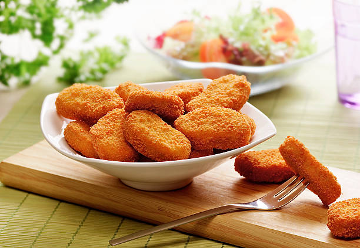

Les nuggets sont de petits morceaux de poulet tendres à l’intérieur et croustillants à l’extérieur. Ils sont recouverts d’une chapelure dorée qui leur donne une texture croquante et une saveur gourmande.
Faciles et rapides à préparer, les nuggets sont parfaits pour un repas convivial. Ils peuvent être servis avec des frites, une salade ou une sauce comme du ketchup ou de la mayonnaise.